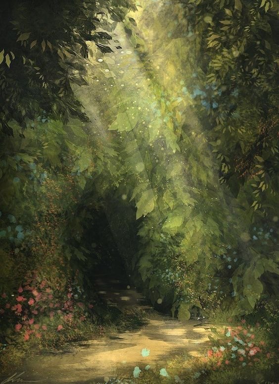
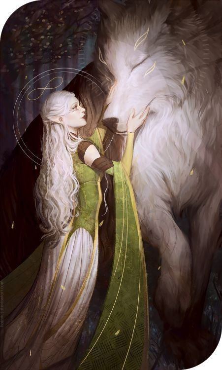

existe un lugar, que muchos conocen,pero pocos creen sobre su existencia. un lugar en donde el sol brilla mas, y los arboles son mas verdes.
este lugar está fuera de lo que conocemos como "real", las personas se concentran en sus propias vidas, y siempre tratan de que la biodibersidad no se extinga.
son seres de luz, que siguen a su reina, esta es muy bondadosa y es el ser mas poderoso que está en este reino.
todos están consientes de que ella jamás usará sus poderes para destrucción a menos de que sea necesario
estos seres "seres de luz" o mas conocidos como "elfos y elfinas" tienen dones, los cuales son inimaginables para el ser humano.
Inteligencia Corporal: Los Elfos están muy conectados con la naturaleza ágil y meditativa de su cuerpo.
En ellos no existe la concepción de la mente y el espíritu separados de su cuerpo orgánico, para ellos, el ser es una unidad, un todo indivisible.
es por esto que su magia abarca también el cuerpo físico que no se deteriora y que les permite realizar hazañas que para los humanos son aún imposibles de soñar.
Se podría decir que los Elfos tienen incorporado de manera muy natural el Yoga,
la conexión del plano físico con la divinidad de manera constante y conciente.
Los Elfos se mueven con gracia y delicadeza, y de un modo tan sutil y silencioso que a veces es imperceptible su presencia,
pueden resultar prácticamente invisibles en un bosque y aún en una ciudad.
sus dones varían pero estos son los que cada uno de ellos porta.
